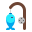
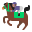

Akhir bukuท้ายเล่ม
Glosari
อภิธานศัพท์
Semua perkataan: 71, disusun mengikut abjadคำศัพท์ทั้งหมด 71 คำ เรียงตามตัวอักษร
| Rumi | Jawi | Maksudความหมาย | Pelajaranบทที่ |
|---|---|---|---|
| badminton | แบดมินตัน | 2 | |
| bangun | ตื่นนอน | 1 | |
| berat | หนัก | 8 | |
| berdosa | เป็นบาป | 5 | |
| berenang | ว่ายน้ำ | 2 | |
| berjumpa | พบกัน | 12 | |
| berkebun | ทำสวน | 4 | |
| berkhat | เขียนอักษรวิจิตร (คัต) | 4 | |
| berkuku tajam | มีกรงเล็บแหลมคม | 6 | |
| berlari | วิ่ง | 2 | |
| bersaie | เดินสะแอ | 7 | |
| bersalah | รู้สึกผิด | 5 | |
| bersarapan | รับประทานอาหารเช้า | 1 | |
| bertaring | มีเขี้ยว | 6 | |
| bertawaf | เดินเวียนรอบกะอ์บะฮ์ (เฏาะวาฟ) | 7 | |
| berwukuf | พักที่อะเราะฟะฮ์ (วุกูฟ) | 7 | |
| สัตว์เลี้ยงในฟาร์ม ปศุสัตว์ | 7 | ||
| ฟุตบอล | 2 | ||
| budi | ความดี คุณธรรม | 12 | |
| cita-cita | ความใฝ่ฝัน | 3 | |
| dijinjing | ถูกหิ้ว (ด้วยมือ) | 8 | |
| dikenang | ถูกจดจำ ระลึกถึง | 12 | |
| dipikul | ถูกแบก (ด้วยไหล่) | 8 | |
| disembelih | ถูกเชือด | 6 | |
| doktor | แพทย์ | 3 | |
| ทองคำ | 7 | ||
| fakir miskin | คนยากจนขัดสน | 7 | |
| guru / ustaz | ครู / ครูสอนศาสนา | 3 | |
| haiwan | สัตว์ | 6 | |
| hobi | งานอดิเรก | 4 | |
| imam | อิหม่าม | 3 | |
| jemaah haji | ผู้แสวงบุญ (ฮุจญาจ) | 7 | |
| jururawat | พยาบาล | 3 | |
| jurutera | วิศวกร | 3 | |
| kalah | แพ้ | 2 | |
| kerja rumah | การบ้าน | 1 | |
| mampu | มีความสามารถ | 7 | |
| melukis | วาดภาพ | 4 | |
| memaafkan | ให้อภัย | 5 | |
| memanah | ยิงธนู | 2 | |
 memancing | ตกปลา | 4 | |
| memasak | ทำอาหาร | 4 | |
| membaca | อ่านหนังสือ | 4 | |
| meminta maaf | ขอโทษ | 5 | |
| memulangkan | ส่งคืน | 5 | |
| menang | ชนะ | 2 | |
| mencuri | ขโมย | 5 | |
| mengaji | อ่านอัลกุรอาน | 1 | |
| mengambil wuduk | อาบน้ำละหมาด | 1 | |
| menulis | เขียน | 4 | |
| menumpang | อาศัย ขอใช้ | 12 | |
| menunaikan haji | ประกอบพิธีฮัจญ์ | 7 | |
 menunggang kuda | ขี่ม้า | 2 | |
| nelayan | ชาวประมง | 3 | |
| ข้าวเปลือก | 7 | ||
| pakaian ihram | ชุดเอียะห์รอม | 7 | |
| pasukan | ทีม | 2 | |
| peliharaan | สัตว์เลี้ยง | 6 | |
| pencuri | ขโมย (ผู้ขโมย) | 5 | |
| peniaga | พ่อค้า แม่ค้า | 3 | |
| perak | เงิน (โลหะ) | 7 | |
| petani | ชาวนา เกษตรกร | 3 | |
| polis | ตำรวจ | 3 | |
| ringan | เบา | 8 | |
| rutin harian | กิจวัตรประจำวัน | 1 | |
| ตะกร้อ | 2 | ||
| sumur | บ่อน้ำ | 12 | |
| tanpa izin | โดยไม่ได้รับอนุญาต | 5 | |
| tekun | ขยัน ตั้งใจ | 1 | |
| zakat fitrah | ซะกาตฟิฏเราะฮ์ | 7 | |
| zakat harta | ซะกาตทรัพย์สิน | 7 |